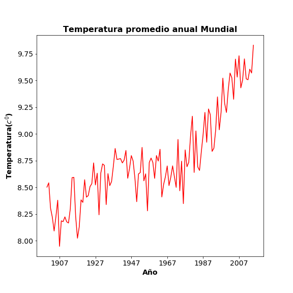
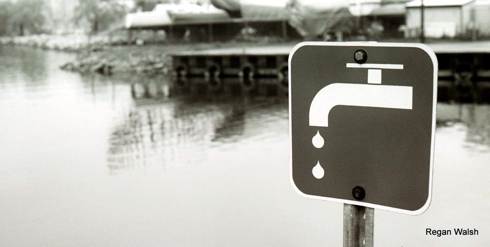
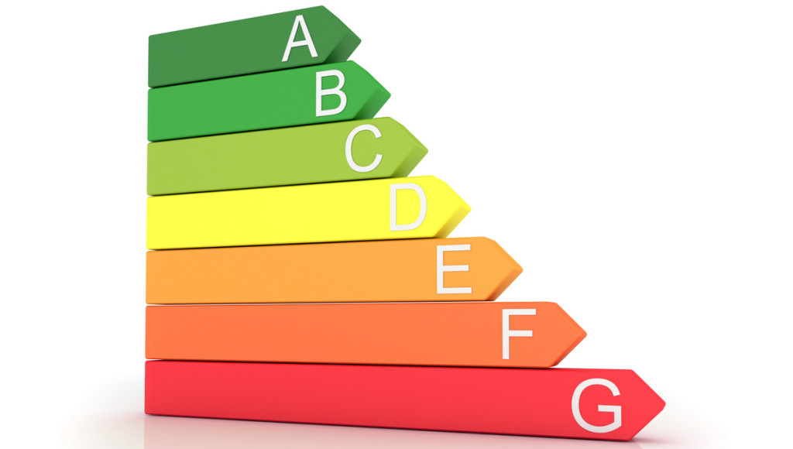

El Calentamiento Global.
el calentamiento global y cambio climatico en los ultimos siglos de la temperatura y sus efectos. multiples pruebas demuestran que el sistema climatico se esta calentando.la prensa comunica el incremento de la temperatura admosferica como medicion de calentamiento global

¿Que es el calentamiento global?.
el termino calentamiento global se refiere al aumento de las temperaturas de la admosfera de los oceanos.
nadie pone en duda el aumento de la temperatura global. aun,asi parte de la comunidad cientifica asegura que el aumento de la temperatura se debe ala concentracion de gases.
 enlase calentamiento global
enlase calentamiento global
Los 6 contaminantes del calentamiento global:.
Las causas del cambio climático se deben a las actividades humanas, especialmente a la producción de electricidad, a la industria, la agricultura, la ganadería, la deforestación y el transporte. En la página de Greenpeace España se señala que el sector energético es el mayor responsable del conjunto de emisiones nocivas al ambiente.
El deterioro de la atmósfera y, por consiguiente, el cambio climático se debe principalmente a la emisión de grandes cantidades de contaminantes atmosféricos que atrapan el calor y aumentan la temperatura del aire, los mares y la tierra. Los efectos no son pocos y trastocan el delicado equilibrio natural en los que sus elementos, como todo en el plantea Tierra, se encuentran intrínsecamente ligados..
Definicion.
La noción de calentamiento global permite referirse a dos cuestiones relacionadas: por un lado, se trata de un fenómeno observado en el promedio de la temperatura de las últimas décadas, que sube de manera sostenida; por otra parte, es una teoría que, a partir de distintas proyecciones, sostiene que la temperatura seguirá creciendo en el futuro a causa de la acción del hombrePese a la popularidad que el tema ha cosechado en los últimos años, es importante realizar algunas distinciones. El calentamiento global suele asociarse al cambio climático, aunque éste último fenómeno (la variación del clima) siempre ha existido y es natural. De todas formas, en la actualidad suele conocerse como cambio climático al producido por la acción humana, que genera variaciones anómalas.

¿Como Podemos Ayudar?.
Disminuir el uso y abuso del automóvil.
En EE.UU. y muchos países “desarrollados” se suben al auto para ir a la tienda de la esquina, cuando fácilmente podrían caminar o ir en bicicleta. También es común ver gente comprar autos grandes de tracción en las 4 ruedas cuando sólo los usan para viajar en la ciudad, muchas veces solos.
1:Caminar más.
2:Usar más la bicicleta.
3.Utilizar el transporte público.
4:Exigir a sus autoridades mejoras en vías para bicicletas, peatones y el transporte público, un país realmente desarrollado ofrece esas opciones.
5:Si compran un auto que sea eficiente y emita pocos gases invernadero.
6.Manejen bien. Utilizar el auto como un adolescente bobo, acelerando, a alta velocidad y frenando abruptamente desgasta el auto, pero más importante, gasta más y emite más contaminantes. APAGUEN el motor si están esperando en alguna parte!
7.Mantengan su auto en condiciones óptimas (revisiones).
8.Revisen el nivel de inflado de sus neumáticos.
9.Usa el aire acondicionado del auto lo menos posible.
10:Utilicen combustibles renovables.
11:Consideren la compra de autos eléctricos o híbridos.1:Cambia tus focos (ampolletas, bulbos) de incandescentes a ahorradores de inmediato. Aunque son caros, los LED son actualmente la mejor opción, pues traen menos elementos contaminantes y en menores concentraciones, donde los focos incandescentes traen, por ejemplo, mercurio, un elemento muy peligroso y dañino.
2:Siempre apagar las luces cuando no las utilizas.
3:Comprar productos de enfriamiento, calentamiento, electrónicos y eléctricos que utilicen la energía de manera eficiente, en algunos países está el estándar Energy Star.
4:Aislar bien los hogares, reduce el gasto energético hasta un 20%.
5:Usar el aire acondicionado, lo menos posible, abrir ventanas y usar ventiladores, ayuda a gastar menos electricidad.
6:Las tres R’s: reducir, reutilizar, reciclar. Tratar de disminuir la producción de basura y desechos orgánicos. No compres productos que traigan empaque excesivo. Compre lo que puedas comer, sírvete porciones que puedas terminar, come lo que has guardado en el refrigerador antes que se dañe, etc. Si puedes, considera hacer compost en su patio. Escoger productos ecológicos/orgánicos, de producción local y empresas responsables, aparte de ser más sano, evitas empaque y gastos en transportarlos. Evita usar cosas desechables, platos, vasos, tazas, cubiertos, son todos muy contaminantes y tardan una eternidad en degradarse en el ambiente. Ubica la entidad local encargada del reciclaje y aprende a separar y preparar tus desechos para su reutilización. Cada vez que quieras tirar algo en la basura, pregúntate si es reciclable.
7:Busque la forma de reciclar los empaques de los productos que consumes, encuentra dónde dejar el plástico, metal y vidrio para reciclaje y que sea una costumbre preparar el desecho de reciclaje de una manera que sirva a los encargados de esa actividad.
8.Reducir el uso del plástico, cuando vas de compras lleva una bolsa reutilizable (de tela o similar) y no recibas bolsas plásticas. Comenta y recomienda en las tiendas y supermercados que dejen de usar bolsas plásticas y cobren por ellas para estimular el uso de opciones ambientalmente saludables.
9:Uso eficiente del agua en el hogar. Duchas cortas, uso esporádico de la tina, métodos eficientes de lavado de platos, apaga el agua mientras te lavas los dientes y afeitas. Repara fugas lo antes posible. Riega en el momento menos caluroso del día. Utilice grifos de baños, duchas y cocina que sean ahorradores. Usar agua menos caliente en duchas y baños de tina ayuda mucho también.
10:Seca tu ropa colgándola al sol y no en secadoras de ropa que usan una enorme cantidad de electricidad y además desgastan la ropa.
11:Lava y seca tu loza a mano, una forma de ahorrar agua es usar un recipiente para el agua con jabón y enjuague en vez de dejar el agua corriendo.
12:Utilice el sol para calentar su agua y si es posible instale paneles solares para crear su propia electricidad.
13:Come menos carne, aparte de generar mucho CO2 y Metano, la industria de la carne es extremadamente contaminante y destructiva para el medio ambiente.
14:Seca tus toallas al sol, en vez de mandarlas a lavar antes de tiempo

En el trabajo.
1Configure sus equipos para entrar en modo de hibernación después de un periodo sin uso. Apague el equipo y luces al final del día.
Utilizar equipo electrónico eficiente, una opción es Energy Star, si su país los ofrece.
Aislar y utilizar equipo de enfriamiento y calefacción eficientes.
Las tres R’s: reducir, reutilizar, reciclar. Imprima sólo si es necesario, imprima y copie en ambas caras del papel, compre papel y otros suministros de material reciclado. El equipo antiguo puede donarse a colegios y otras entidades.
Disminuya el uso de energía en su transporte a la oficina o negocio. Utilice transporte público, bicicleta, haga carpooling (viajar con colegas en un sólo auto) para ahorrar no sólo recursos, sino dinero.
Considerar los efectos sobre el ambiente, disminuir su huella de carbono en el calentamiento global también es bueno para su economía y salud mental.
Es recomendable revisar la rutina diaria y analizar críticamente lo que haces, revisar tus actividades y ver todo lo que haces desde la perspectiva del ambiente, esto que como, de dónde viene, cuánto empaque tiene, qué vas a hacer con el desecho posterior al consumo. Si ves que contamina mucho, evítalo y si puedes sugiere a las empresa que mejore su producto usando otro empaque, menos cantidad, plásticos reciclables y mejor, biodegradables. Todo lo que haces tiene un efecto en el ambiente, nuestra tarea como ciudadanos responsables y consecuentes, es hacer todo lo posible por disminuir ese efecto sin afectar negativamente nuestro diario vivir.

¿Por qué el calentamiento global es una amenaza?.
Aunque es un fenómeno natural normal, se ha desestabilizado por las altas concentraciones de tres gases que alcanzaron los niveles más altos en 800 mil años.
Dichos gases son el dióxido de carbono, el metano y el óxido nitroso.
En 130 años, la temperatura promedio del planeta subió 0,85 grados centígrados, pero el actual ritmo de crecimiento de las emisiones llevaría a un aumento de 4 grados para 2100.
¿Quienes son los responsables.
El consumo de combustibles fósiles: las emisiones de CO2 alcanzaron 2 billones de toneladas desde la Revolución Industrial de 1750El metano: es generado por la agricultura intensiva. Es responsable entre el 10% y 12% de los gases de efecto invernadero, y los rumiantes con cerca del 40%.
Deforestación: destruye la vegetación que absorbe el CO2.
Mas Informacion.
este es un enlace a nuestra investigacion con datos Python